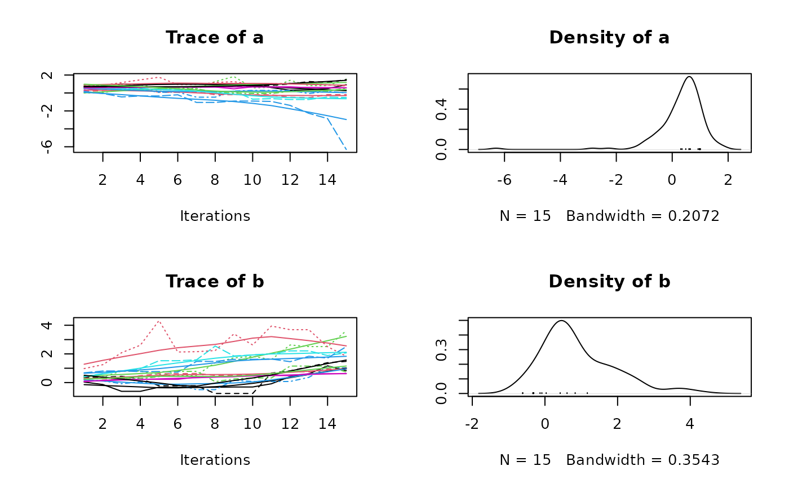
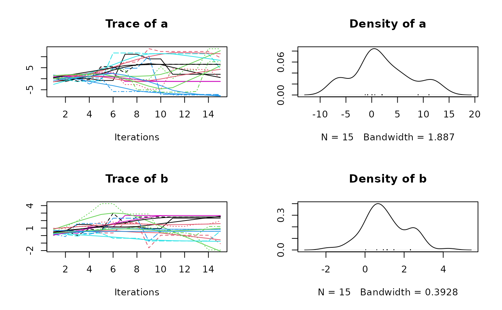

Ensemble Markov Chain Monte Carlo sampler with different strategies to generate proposals. Either the stretch move as proposed by Goodman and Weare (2010), or a differential evolution jump move similar to Braak and Vrugt (2008).
MCMCEnsemble( f, lower.inits, upper.inits, max.iter, n.walkers = 10 * length(lower.inits), method = c("stretch", "differential.evolution"), coda = FALSE, ... )
| f | function that returns a single scalar value proportional to the log probability density to sample from. |
|---|---|
| lower.inits | vector specifying for each parameter the lower value the initial distribution. |
| upper.inits | vector specifying for each parameter the upper value the initial distribution. |
| max.iter | maximum number of function evaluations |
| n.walkers | number of walkers (ensemble size) |
| method | method for proposal generation, either |
| coda | logical. Should the samples be returned as coda::mcmc.list
object? (defaults to |
| ... | further arguments passed to |
if coda = FALSE a list with:
samples: A three dimensional array of samples with dimensions walker
x generation x parameter
log.p: A matrix with the log density evaluate for each walker at each generation.
if coda = TRUE a list with:
samples: A object of class coda::mcmc.list containing all samples.
log.p: A matrix with the log density evaluate for each walker at each generation.
In both cases, there is an additional attribute (accessible via
attr(res, "ensemble.sampler")) recording which ensemble sampling algorithm
was used.
ter Braak, C. J. F. and Vrugt, J. A. (2008) Differential Evolution Markov Chain with snooker updater and fewer chains. Statistics and Computing, 18(4), 435–446, doi: 10.1007/s11222-008-9104-9
Goodman, J. and Weare, J. (2010) Ensemble samplers with affine invariance. Communications in Applied Mathematics and Computational Science, 5(1), 65–80, doi: 10.2140/camcos.2010.5.65
## a log-pdf to sample from p.log <- function(x) { B <- 0.03 # controls 'bananacity' -x[1]^2/200 - 1/2*(x[2]+B*x[1]^2-100*B)^2 } ## use stretch move res1 <- MCMCEnsemble(p.log, lower.inits=c(a=0, b=0), upper.inits=c(a=1, b=1), max.iter=300, n.walkers=10, method="stretch")#>#> [1] "stretch"#> List of 2 #> $ samples: num [1:10, 1:30, 1:2] 0.0808 0.6008 0.0074 0.4978 0.7329 ... #> ..- attr(*, "dimnames")=List of 3 #> .. ..$ : chr [1:10] "walker_1" "walker_2" "walker_3" "walker_4" ... #> .. ..$ : chr [1:30] "generation_1" "generation_2" "generation_3" "generation_4" ... #> .. ..$ : chr [1:2] "a" "b" #> $ log.p : num [1:10, 1:30] -2.34 -4.01 -3.21 -3.65 -2.45 ... #> ..- attr(*, "dimnames")=List of 2 #> .. ..$ : chr [1:10] "walker_1" "walker_2" "walker_3" "walker_4" ... #> .. ..$ : chr [1:30] "generation_1" "generation_2" "generation_3" "generation_4" ... #> - attr(*, "ensemble.sampler")= chr "stretch"## use stretch move, return samples as 'coda' object res2 <- MCMCEnsemble(p.log, lower.inits=c(a=0, b=0), upper.inits=c(a=1, b=1), max.iter=300, n.walkers=10, method="stretch", coda=TRUE)#>#> [1] "stretch"#> #> Iterations = 1:30 #> Thinning interval = 1 #> Number of chains = 10 #> Sample size per chain = 30 #> #> 1. Empirical mean and standard deviation for each variable, #> plus standard error of the mean: #> #> Mean SD Naive SE Time-series SE #> a 0.4205 1.611 0.09299 0.2533 #> b 1.9467 1.444 0.08334 0.2066 #> #> 2. Quantiles for each variable: #> #> 2.5% 25% 50% 75% 97.5% #> a -2.82891 -0.1953 0.6247 1.073 3.678 #> b -0.07003 0.7065 1.7927 3.106 4.640 #>## use different evolution move, return samples as 'coda' object res3 <- MCMCEnsemble(p.log, lower.inits=c(a=0, b=0), upper.inits=c(a=1, b=1), max.iter=300, n.walkers=10, method="differential.evolution", coda=TRUE)#>#> [1] "differential.evolution"#> #> Iterations = 1:30 #> Thinning interval = 1 #> Number of chains = 10 #> Sample size per chain = 30 #> #> 1. Empirical mean and standard deviation for each variable, #> plus standard error of the mean: #> #> Mean SD Naive SE Time-series SE #> a -3.073 6.301 0.3638 0.8828 #> b 1.239 1.844 0.1065 0.2360 #> #> 2. Quantiles for each variable: #> #> 2.5% 25% 50% 75% 97.5% #> a -15.058 -8.1080 -2.196 2.16 6.695 #> b -3.674 0.4079 1.210 2.45 4.092 #>